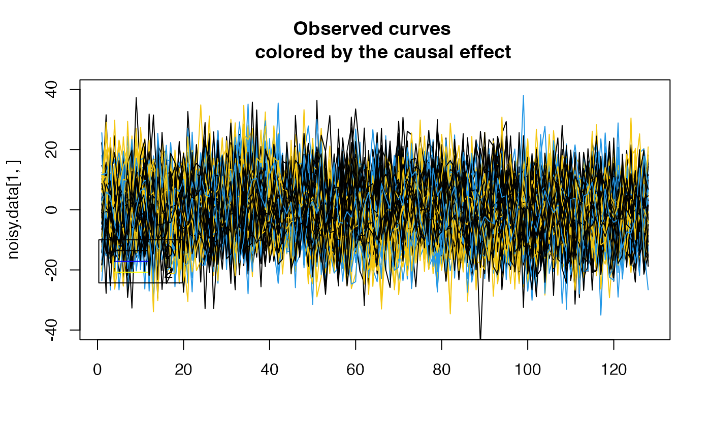
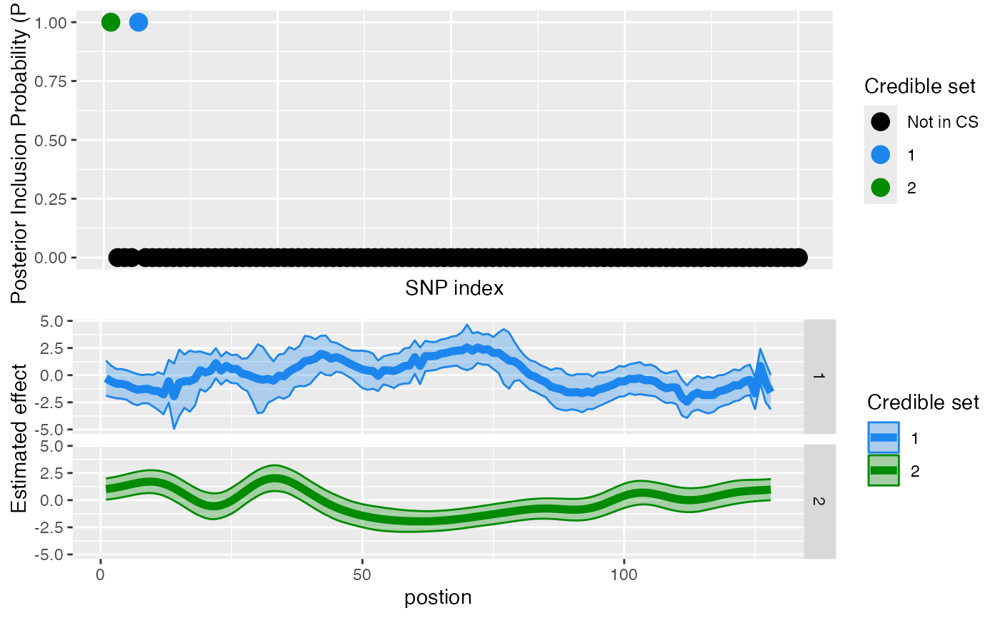
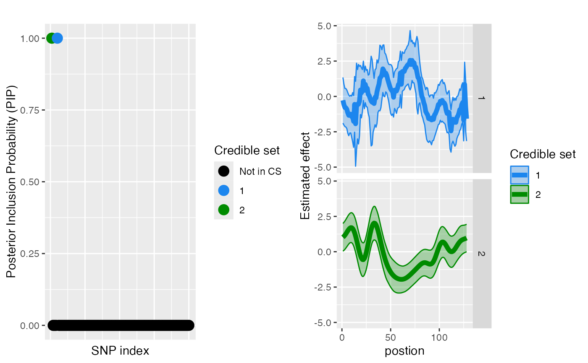
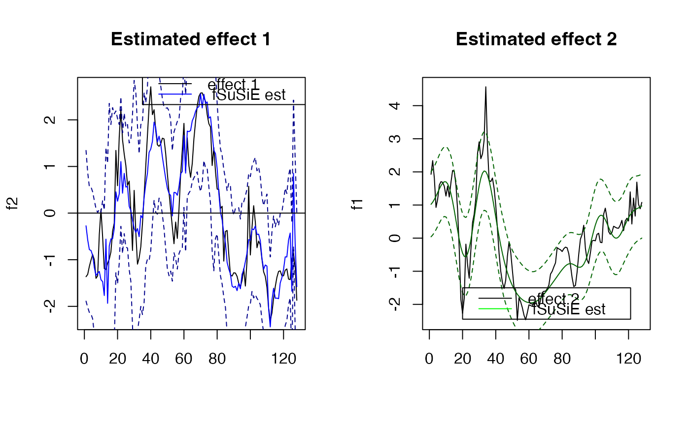
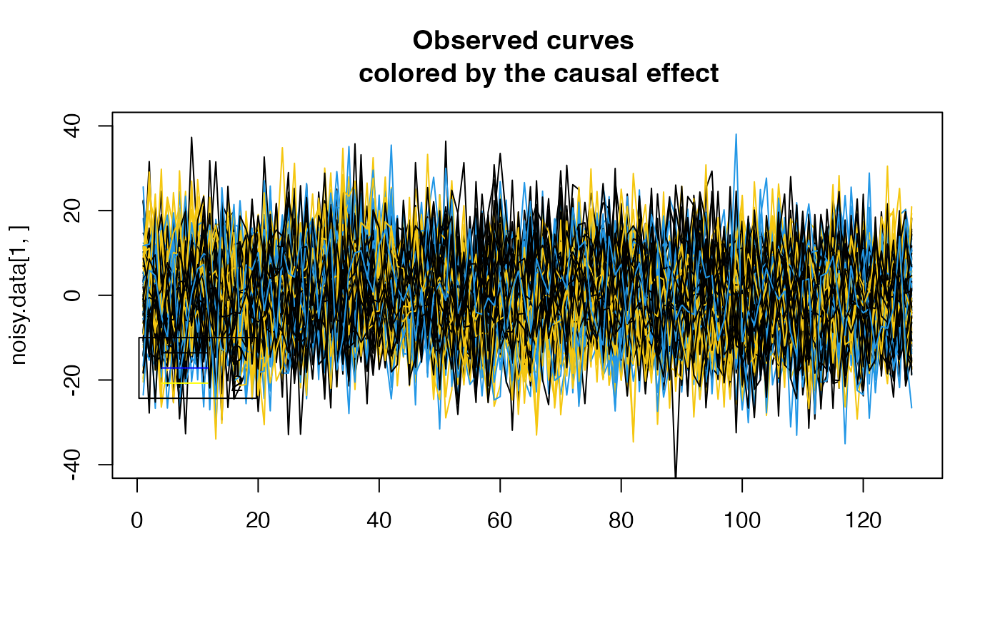
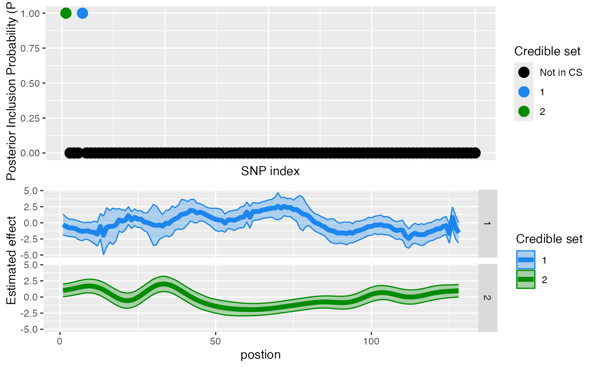
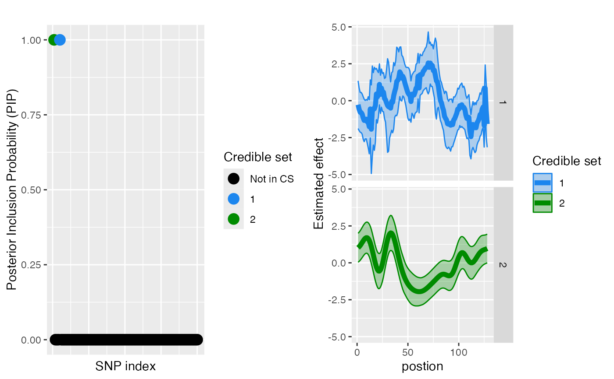
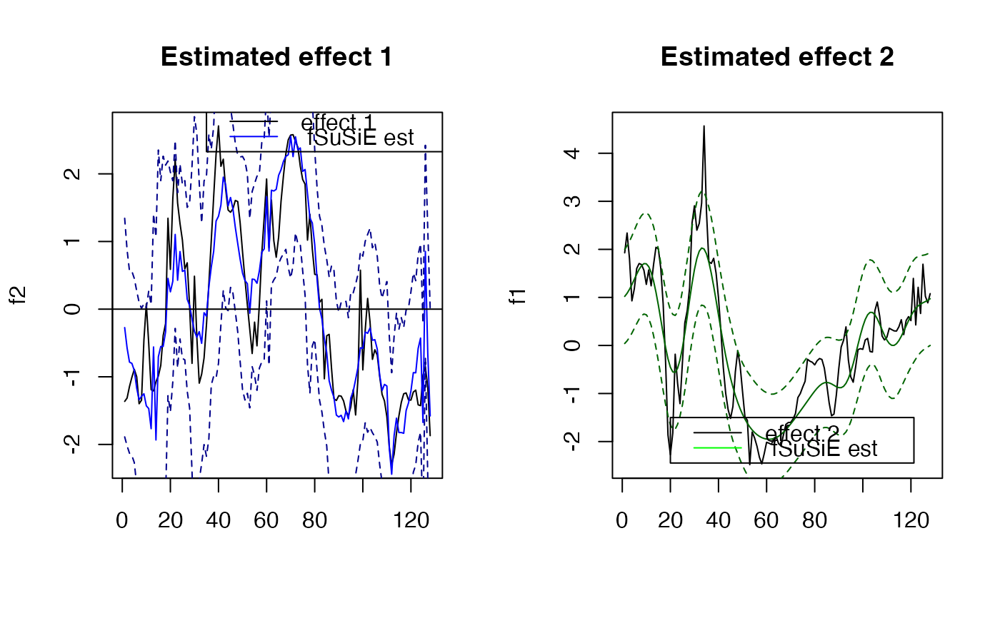

Implementation of the SuSiF method
susiF(
Y,
X,
L = 2,
pos = NULL,
prior = c("mixture_normal_per_scale", "mixture_normal"),
verbose = TRUE,
maxit = 100,
tol = 0.001,
cov_lev = 0.95,
min_purity = 0.5,
filter_cs = TRUE,
init_pi0_w = 1,
nullweight = 10,
control_mixsqp = list(verbose = FALSE, eps = 1e-06, numiter.em = 4),
thresh_lowcount = 0,
cal_obj = FALSE,
L_start = 3,
quantile_trans = FALSE,
greedy = TRUE,
backfit = TRUE,
gridmult = sqrt(2),
max_scale = 10,
max_SNP_EM = 1000,
max_step_EM = 1,
cor_small = FALSE,
filter.number = 10,
family = "DaubLeAsymm",
post_processing = c("TI", "HMM", "none"),
e = 0.001
)Arguments
- Y
functional phenotype, matrix of size N by size J. The underlying algorithm uses wavelet, which assumes that J is of the form J^2. If J is not a power of 2, susiF internally remaps the data into a grid of length 2^J
- X
matrix of size n by p contains the covariates
- L
upper bound on the number of effects to fit (if not specified, set to =2)
- pos
vector of length J, corresponding to position/time pf the observed column in Y, if missing, suppose that the observation are evenly spaced
- prior
specify the prior used in susiF. The two available choices are available "mixture_normal_per_scale", "mixture_normal". Default "mixture_normal_per_scale", if this susiF is too slow, consider using "mixture_normal" using "mixture_normal" which is up to 40% faster but may lead to slight power loss
- verbose
If
verbose = TRUE, the algorithm's progress, and a summary of the optimization settings are printed on the console.- maxit
Maximum number of IBSS iterations.
- tol
a small, non-negative number specifying the convergence tolerance for the IBSS fitting procedure. The fitting procedure will halt when the difference in the variational lower bound or “ELBO” (the objective function to be maximized), is less than
tol.- cov_lev
numeric between 0 and 1, corresponding to the expected level of coverage of the CS if not specified, set to 0.95
- min_purity
minimum purity for estimated credible sets
- filter_cs
logical, if TRUE filters the credible set (removing low-purity) cs and cs with estimated prior equal to 0). Set as TRUE by default.
- init_pi0_w
starting value of weight on null compoenent in mixsqp (between 0 and 1)
- nullweight
numeric value for penalizing likelihood at point mass 0 (should be between 0 and 1) (useful in small sample size)
- control_mixsqp
list of parameter for mixsqp function see mixsqp package
- thresh_lowcount
numeric, used to check the wavelet coefficients have problematic distribution (very low dispersion even after standardization). Basically, check if the median of the absolute value of the distribution of a wavelet coefficient is below this threshold. If yes, the algorithm discards this wavelet coefficient (setting its estimate effect to 0 and estimate sd to 1). Set to 0 by default. It can be useful when analyzing sparse data from sequence based assay or small samples.
- cal_obj
logical if set as TRUE compute ELBO for convergence monitoring
- L_start
number of effect initialized at the start of the algorithm
- quantile_trans
logical, if set as TRUE perform normal quantile, transform on wavelet coefficients
- greedy
logical, if TRUE allows greedy search for extra effect (up to L specified by the user). Set as TRUE by default
- backfit
logical, if TRUE, allow discarding effect via back fitting. Set as true by default as TRUE. We advise keeping it as TRUE.
- gridmult
numeric used to control the number of components used in the mixture prior (see ashr package for more details). From the ash function: multiplier by which the default grid values for mixed differ from one another. (Smaller values produce finer grids.). Increasing this value may reduce computational time.
- max_scale
numeric, define the maximum of wavelet coefficients used in the analysis (2^max_scale). Set 10 true by default.
- max_SNP_EM
maximum number of SNP used for learning the prior. By default, set to 1000. Reducing this may help reduce the computational time. We advise to keep it at least larger than 50
- max_step_EM
max_step_EM
- cor_small
logical set to FALSE by default. If TRUE used the Bayes factor from Valen E Johnson JRSSB 2005 instead of Wakefield approximation for Gen Epi 2009 The Bayes factor from Valen E Johnson JRSSB 2005 tends to have better coverage in small sample sizes. We advise using this parameter if n<50
- filter.number
see documentation of wd from wavethresh package
- family
see documentation of wd from wavethresh package
- post_processing
character, use "TI" for translation invariant wavelet estimates, "HMM" for hidden Markov model (useful for estimating non-zero regions), "none" for simple wavelet estimate (not recommended)
- e
threshold value is used to avoid computing posteriors that have low alpha values. Set it to 0 to compute the entire posterior. default value is 0.001
Value
A "susiF" object with some or all of the following elements:
- alpha
a list of length L containing the posterior inclusion probabilities for each effect.
- pip
a vector of length J, containing the posterior inclusion probability of each covariate
- cs
a list of length L, each element is the credible set of the lth effect
- purity
a list of length L, each element is the purity of the lth effect
- fitted_func
a list of length L, each element is a list of length J, containing the estimated effect of the Lth effect at each position
- cred_band
a list of length L, each element is a list of length J, containing the credible band of the Lth effect at each position
- sigma2
The estimated residual variance
- lBF
a list of length L containing the log Bayes factor for each effect.
- ind_fitted_func
a matrix of the individual estimated genotype effect
- outin_grid
The grid on which the effects are estimated (see vignette introduction for more details)
- runtime
runtime of the algorithm
- G_prior
a list of of ash objects containning the prior mixture component
- est_pi
a list of length L, each element contains the estimated prior mixture weights for each effect
- est_sd
the estimated prior mixture for each effect
- ELBO
the ELBO value at each iteration of the algorithm
- fitted_wc
a list of length L, each element is a list of length J, containing the conditional wavelet coefficients first moment for Lth effect. Note that this is only for internal use in the IBSS and the results in fitted_func will corresponds to this wavelet coefficient if
post_processingis set tonone, not recommended.- fitted_wc2
a list of length L, each element is a list of length J, containing the conditional wavelet coefficients second-moment for the Lth effect.
Details
Implementation of the SuSiF method
Examples
library(ashr)
library(wavethresh)
set.seed(1)
#Example using curves simulated under the Mixture normal per scale prior
rsnr <- 0.2 #expected root signal noise ratio
N <- 100 #Number of individuals
P <- 100 #Number of covariates/SNP
pos1 <- 1 #Position of the causal covariate for effect 1
pos2 <- 5 #Position of the causal covariate for effect 2
lev_res <- 7#length of the molecular phenotype (2^lev_res)
f1 <- simu_IBSS_per_level(lev_res )$sim_func#first effect
f2 <- simu_IBSS_per_level(lev_res )$sim_func #second effect
plot( f1, type ="l", ylab="effect", col="blue")
abline(a=0,b=0)
lines(f2, type="l", col="green")
legend(x=100,
y=3,
lty = rep(1,3),
legend= c("effect 1", "effect 2" ),
col=c("black","blue","yellow"))
 G = matrix(sample(c(0, 1,2), size=N*P, replace=TRUE), nrow=N, ncol=P) #Genotype
beta0 <- 0
beta1 <- 1
beta2 <- 1
noisy.data <- list()
for ( i in 1:N)
{
f1_obs <- f1
f2_obs <- f2
noise <- rnorm(length(f1), sd= (1/ rsnr ) * var(f1))
noisy.data [[i]] <- beta1*G[i,pos1]*f1_obs + beta2*G[i,pos2]*f2_obs + noise
}
noisy.data <- do.call(rbind, noisy.data)
plot( noisy.data[1,], type = "l", col=(G[1, pos1]*3+1),
main ="Observed curves \n colored by the causal effect" , ylim= c(-40,40), xlab="")
for ( i in 2:N)
{
lines( noisy.data[i,], type = "l", col=(G[i, pos1]*3+1))
}
legend(x=0.3,
y=-10,
lty = rep(1,3),
legend= c("0", "1","2"),
col=c("black","blue","yellow"))

Y <- noisy.data
X <- G
#Running fSuSiE
out <- susiF(Y,X,L=2 , prior = 'mixture_normal_per_scale')
#> [1] "Starting initialization"
#> [1] "Data transform"
#> [1] "Discarding 0 wavelet coefficients out of 128"
#> [1] "Data transform done"
#> [1] "Initializing prior"
#> [1] "Initialization done"
#> [1] "Fitting effect 1 , iter 1"
#> [1] "Fitting effect 2 , iter 1"
#> [1] "Discarding 0 effects"
#> [1] "Greedy search and backfitting done"
#> [1] "Fitting effect 1 , iter 2"
#> [1] "Fitting effect 2 , iter 2"
#> [1] "Fine mapping done, refining effect estimates using cylce spinning wavelet transform"
plot_susiF(out, cred.band = TRUE)


#### Find out which regions are affected by the different CS
affected_reg(obj = out)
#> CS Start End
#> 5 1 42 43
#> 6 1 45 46
#> 7 1 60 60
#> 8 1 62 76
#> 1 1 90 90
#> 2 1 94 94
#> 3 1 111 118
#> 4 1 125 125
#> 10 2 1 13
#> 11 2 29 38
#> 9 2 48 80
#> 12 2 128 128
# This corresponds to the regions where the credible bands are
# "crossing zero"/i.e. the effects are likely not to be 0 in this
# region.
#
# You can also access the information directly in the output of
# susiF as follows.
par(mfrow=c(1,2))
plot( f2, type="l", main="Estimated effect 1", xlab="")
lines(unlist(out$fitted_func[[1]]),col='blue' )
lines(unlist(out$cred_band[[1]][1,]),col='darkblue',lty=2 )
lines(unlist(out$cred_band[[1]][2,]),col='darkblue' ,lty=2 )
abline(a=0,b=0)
legend(x= 35,
y=3,
lty= rep(1,2),
legend = c("effect 1"," fSuSiE est "),
col=c("black","blue" )
)
plot( f1, type="l", main="Estimated effect 2", xlab="")
lines(unlist(out$fitted_func[[2]]),col='darkgreen' )
lines(unlist(out$cred_band[[2]][1,]),col='darkgreen',lty=2 )
lines(unlist(out$cred_band[[2]][2,]),col='darkgreen' ,lty=2 )
#'abline(a=0,b=0)
legend(x= 20,
y=-1.5,
lty= rep(1,2),
legend = c("effect 2"," fSuSiE est "),
col=c("black","green" )
)

par(mfrow=c(1,1))
G = matrix(sample(c(0, 1,2), size=N*P, replace=TRUE), nrow=N, ncol=P) #Genotype
beta0 <- 0
beta1 <- 1
beta2 <- 1
noisy.data <- list()
for ( i in 1:N)
{
f1_obs <- f1
f2_obs <- f2
noise <- rnorm(length(f1), sd= (1/ rsnr ) * var(f1))
noisy.data [[i]] <- beta1*G[i,pos1]*f1_obs + beta2*G[i,pos2]*f2_obs + noise
}
noisy.data <- do.call(rbind, noisy.data)
plot( noisy.data[1,], type = "l", col=(G[1, pos1]*3+1),
main ="Observed curves \n colored by the causal effect" , ylim= c(-40,40), xlab="")
for ( i in 2:N)
{
lines( noisy.data[i,], type = "l", col=(G[i, pos1]*3+1))
}
legend(x=0.3,
y=-10,
lty = rep(1,3),
legend= c("0", "1","2"),
col=c("black","blue","yellow"))

Y <- noisy.data
X <- G
#Running fSuSiE
out <- susiF(Y,X,L=2 , prior = 'mixture_normal_per_scale')
#> [1] "Starting initialization"
#> [1] "Data transform"
#> [1] "Discarding 0 wavelet coefficients out of 128"
#> [1] "Data transform done"
#> [1] "Initializing prior"
#> [1] "Initialization done"
#> [1] "Fitting effect 1 , iter 1"
#> [1] "Fitting effect 2 , iter 1"
#> [1] "Discarding 0 effects"
#> [1] "Greedy search and backfitting done"
#> [1] "Fitting effect 1 , iter 2"
#> [1] "Fitting effect 2 , iter 2"
#> [1] "Fine mapping done, refining effect estimates using cylce spinning wavelet transform"
plot_susiF(out, cred.band = TRUE)


#### Find out which regions are affected by the different CS
affected_reg(obj = out)
#> CS Start End
#> 5 1 42 43
#> 6 1 45 46
#> 7 1 60 60
#> 8 1 62 76
#> 1 1 90 90
#> 2 1 94 94
#> 3 1 111 118
#> 4 1 125 125
#> 10 2 1 13
#> 11 2 29 38
#> 9 2 48 80
#> 12 2 128 128
# This corresponds to the regions where the credible bands are
# "crossing zero"/i.e. the effects are likely not to be 0 in this
# region.
#
# You can also access the information directly in the output of
# susiF as follows.
par(mfrow=c(1,2))
plot( f2, type="l", main="Estimated effect 1", xlab="")
lines(unlist(out$fitted_func[[1]]),col='blue' )
lines(unlist(out$cred_band[[1]][1,]),col='darkblue',lty=2 )
lines(unlist(out$cred_band[[1]][2,]),col='darkblue' ,lty=2 )
abline(a=0,b=0)
legend(x= 35,
y=3,
lty= rep(1,2),
legend = c("effect 1"," fSuSiE est "),
col=c("black","blue" )
)
plot( f1, type="l", main="Estimated effect 2", xlab="")
lines(unlist(out$fitted_func[[2]]),col='darkgreen' )
lines(unlist(out$cred_band[[2]][1,]),col='darkgreen',lty=2 )
lines(unlist(out$cred_band[[2]][2,]),col='darkgreen' ,lty=2 )
#'abline(a=0,b=0)
legend(x= 20,
y=-1.5,
lty= rep(1,2),
legend = c("effect 2"," fSuSiE est "),
col=c("black","green" )
)

par(mfrow=c(1,1))